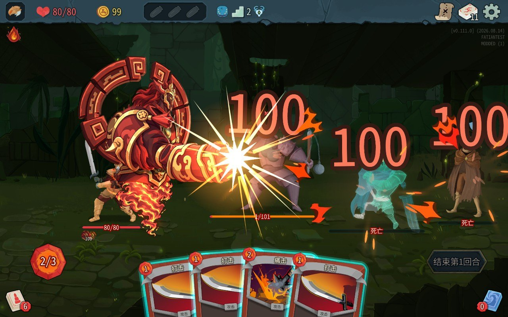
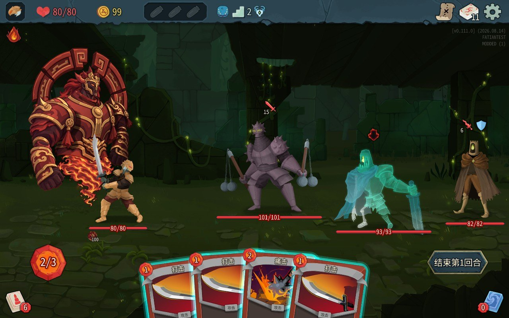
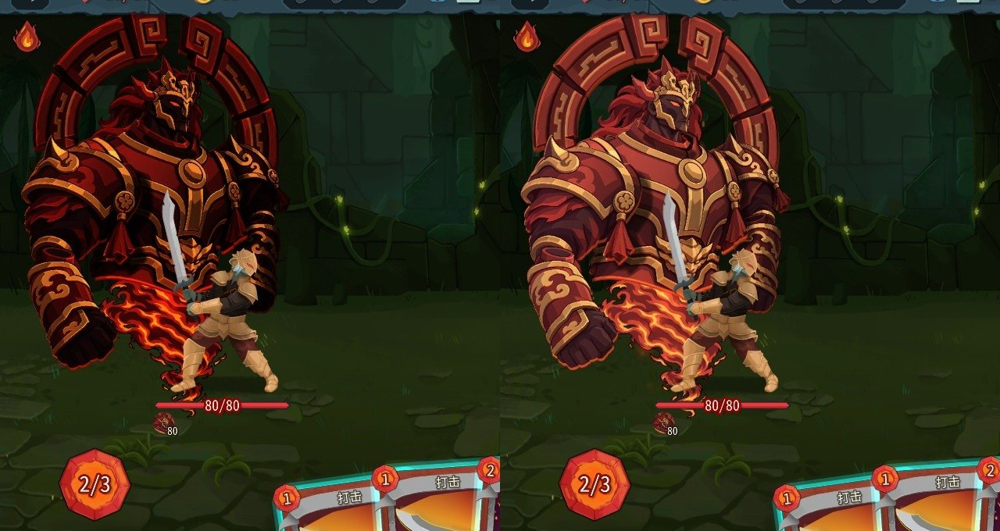
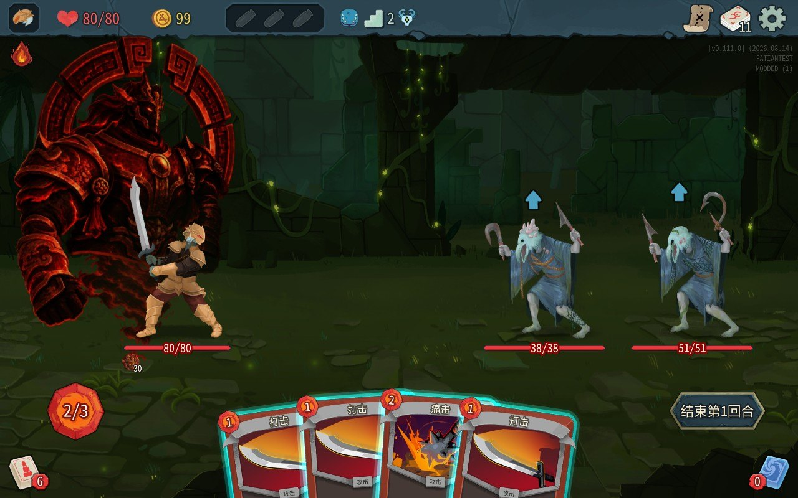

这张牌叫法天象地。铁甲战士打出它，身后站起一尊火红的战神。之后每个回合结束，战神往前一拳，所有敌人掉 100 点血。1 费。

我不写代码。代码是 Claude 写的，最后用的画是 GPT 画的。我做的事情只有三样：说我要什么，进游戏玩，说哪里不对。
最早的动画我是交给 Codex 做的，拿到手我的评价是「只能说勉强达到我的预期」，离我想要的那种打击感还差一截。10 月 6 日夜里我把东西转给 Claude 接着做。第一版能玩之后，我们又来回改了九轮，到 7 日上午才算完。

这一页记的是那九轮里发生的事。讲接口的资料网上有，这里不重复。我想留下的是另一种东西：一个不写代码的人，实际会卡在哪。
先做什么，后做什么
顺序是 Claude 定的，照抄在这里：
| 步骤 | 做到什么算完 |
|---|---|
| 1 | 查清游戏怎么认 mod。这一版是往游戏目录的 mods 文件夹里放三个文件 |
| 2 | 做一个什么都不干的空 mod，游戏日志里出现「已加载」，没有报错 |
| 3 | 写牌和伤害，画面先用占位图 |
| 4 | 做动画素材 |
| 5 | 把动画、站位、声音接进游戏 |
| 6 | 让游戏自己测自己（后面单独讲） |
| 7 | 我进去玩，提意见，改。每改一轮都重跑第 6 步 |
第 2 步看着最无聊，但它没通之前，后面做的东西全都没法验证。这次调研加搭工程大概花了一成半的力气，其中包括下载一个旧版本的 Godot，下得很慢。游戏的资源包只认 4.5.1 打出来的，新版本打的它不认。
数值倒是不用提前想。伤害我改了三次，8、30、80、100，每次几分钟。
九轮里踩的坑
按浪费的时间从多到少排。
法相又黑又艳
游戏里的战神比原图暗很多，红得发黑。不报错，一切正常运行。
我说了颜色不对。Claude 排查了贴图压缩，排查了别的几样，最后给了一个结论：推测是游戏对整个画面做了调色。我后来又问了两次。问到第三次，它才换了个办法：在战神旁边画几块颜色已知的色块，截屏，把屏幕上的颜色读回来。
色块的颜色一点没变，所以不是游戏调的。战神身上的颜色，正好是原图颜色自己乘了自己。是它第二轮写的一小段调色代码把同一张图的颜色乘了两遍，原本 0.38 的红变成了 0.15。

后来的做法：Claude 在复盘文档里给自己写了一句，「用户说颜色不对时，先量屏幕像素，不要先猜」。
它说改了，其实没改
第二轮 Claude 报告「已去掉出场 1 秒处的提亮」。到第四轮才发现那次根本没生效。
原因是同一份动画代码存在两个地方：一份单独的文件，一份嵌在导出用的网页里。它改的是前一份，实际导出用的是后一份。
后来的做法：报「已改」之前，要在最后进游戏的那个文件里确认，不能只看改过的源文件。
画风和游戏不搭
第一版战神是写实的厚涂，杀戮尖塔 2 是平涂加粗勾线。两种画法放在同一个画面里，一眼就能看出战神不是这个游戏的东西。

我把游戏截图发给 GPT，让它一个部件一个部件重画，一共八个部件加一条火焰尾。提示词里最要紧的一句是只改画法，不改每个部件的位置、大小、轮廓。这样骨架和动作都不用重做。GPT 还是会悄悄挪位置，Claude 写了个脚本把新图对回旧位置。
后来的做法：找素材之前先截一张游戏里的战斗画面，画风按它定。
图是糊的
两层原因。导出动画帧时倍率设的是 0.6，而我屏幕上游戏有 2560 宽，一个图像素要撑两个多屏幕像素。另外原图是九个部件挤在一张图里，每个只有 400 像素左右。
倍率改回 1.0 之后清楚了，代价是 mod 的资源包从 136MB 涨到 377MB。
后来的做法：开工时先看自己屏幕上游戏的实际分辨率，素材大小按它定。
发牌不丝滑
第二天我发现带 mod 玩的时候，每回合发牌有点慢，原版很顺。我问 Claude 是不是 mod 拖慢了游戏。
Claude 先量了 24 个回合的画面帧数，有没有战神都是稳定 60 帧，没量出毛病。后来才找到：带 mod 运行时，游戏会换用另一套存档，那套存档的设置是全新的，「快速模式」没开。原版每张牌飞 0.1 秒，这边是 0.25 秒。
后来的做法：启动脚本里加了一步，那套存档没有设置文件时，把原版的拷过去。这件事跟性能没关系，但我描述成了「卡顿」，它就先去量了帧数。
伤害 30，敌人只掉 9 点
测试用的敌人是甲虫。甲虫有个能力，每次最多掉 9 点血。
后来的做法：测数值换一种没有特殊能力的敌人。
让游戏自己测自己
Claude 看不到我的屏幕，也听不到声音。所以它在 mod 里加了一段平时不运行的测试代码。放一个标记文件进去，游戏启动后就自己开一局，进战斗，从手牌里打出这张牌，结束回合，从游戏内部截图和录音，把敌人掉了多少血写进日志，然后退出。
上面那些坑，颜色、出场时闪的那一下、伤害数字，都是靠它查出来的。Claude 自己的估计是这部分占了一成的力气，后面每一轮都在用。
有一个细节值得记：测试要走「从手牌打出真牌」这条路。第一轮它用控制台直接把效果挂到角色身上，结果漏掉了出场闪烁，因为两条路经过的代码不一样。
要是重来一次
九轮修改占了全部力气的三成半左右。Claude 复盘时说，画风、清晰度、战神站在哪，这三样如果开工前就对着游戏截图定好，至少能少四轮。
所以下次我会先做一件事：截一张目标角色的战斗画面，在上面比划新东西有多大、站哪、长什么样，然后再让人画。
另一件是我自己的。颜色那件事，我第一次说「不对」的时候没有追问它是怎么知道的。下次它说「推测」，我会直接问有没有量过。
几句说明
这是 2026 年 10 月在 v0.111.0 上的做法。游戏还在更新，接口可能会变，过几个月再看，上面的具体步骤也许已经对不上了。
声音用的是 BigSoundBank 的 CC0 录音（Joseph Sardin 录的），加上程序合成的低频。
源码暂时没有公开，我还在清理里面跟我这台电脑绑定的东西。清完会放到 GitHub 上，到时候在这里补链接。